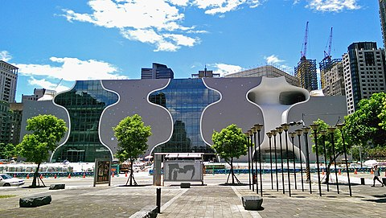
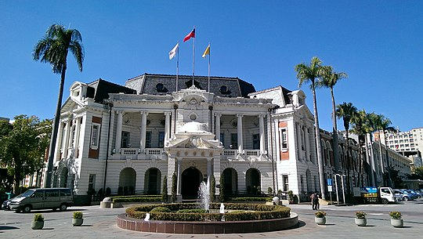
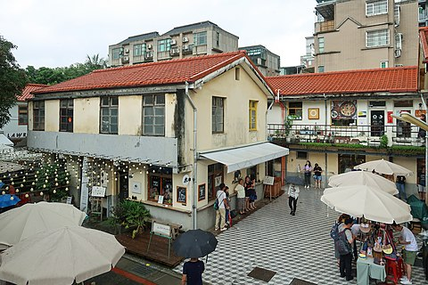
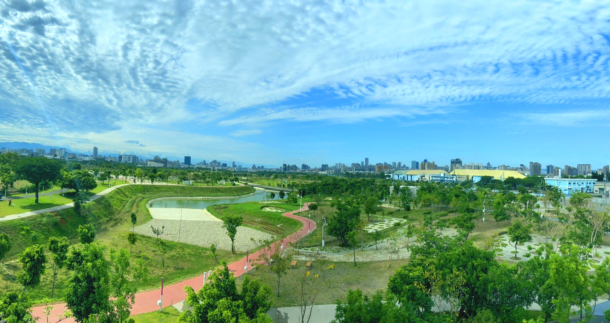

臺中國家歌劇院
極具特色的大型公有展演空間，由日本建築師伊東豊雄設計，以人類最原始的「洞窟」、「地穴」的概念設計成世界獨一無二的美聲涵洞曲牆建築，歷時五年時間完成，內部規劃有大劇院、中劇院及小型實驗劇場。
西屯區惠來路二段101號
臺中市，通稱臺中，簡稱「中」，為中華民國直轄市，臺灣六都之一，也是中臺灣唯一的直轄市。周邊與臺灣省的六個縣相鄰，北鄰苗栗縣、新竹縣，南鄰彰化縣、南投縣，東隔中央山脈與花蓮縣相鄰，東北以中央山脈和雪山山脈毗鄰宜蘭縣，西臨臺灣海峽。

極具特色的大型公有展演空間，由日本建築師伊東豊雄設計，以人類最原始的「洞窟」、「地穴」的概念設計成世界獨一無二的美聲涵洞曲牆建築，歷時五年時間完成，內部規劃有大劇院、中劇院及小型實驗劇場。

為一座國定古蹟，二戰後由臺中市政府遷入辦公，由於該建築原為日治時期之「州政府」，因而沿用此稱呼。周邊鄰近臺中文學公園、臺中刑務所演武場、宮原眼科等熱門景點，富含歷史文化底蘊。

原為臺灣省政府審計處員工宿舍，在凍省之後成了閒置空間荒廢多年，近年配合臺中市政府勞工局「摘星青年、築夢臺中」創業基地進駐計畫，重新規劃轉型成為極具人氣的青年創業基地與文創園區。
高美野生動物保護區是臺灣西海岸一處豐富的生態保護區，綜合淡水注水與潮汐交替所構成的海岸溼地。隨臺中港北岸沙堤築起後，大甲溪挾帶泥沙在此淤積，成為現今觀賞夕陽與豐富潮間帶生態的絕佳聖地。

總面積約67公頃，為臺灣面積第四大之公園。基地前身為水湳機場，內留有歷史建築水湳機場營舍與原日軍臺中飛行場機槍堡、老樹公園等歷史遺跡，融合了都市生態與歷史記憶。